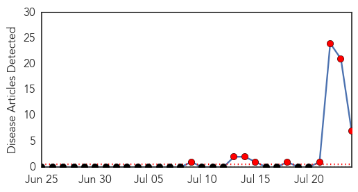
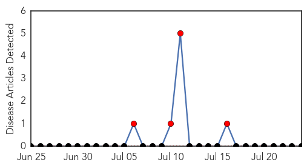

Bubonic Plague
30-Day Web Trend
9 alerts, 0 warnings

30-Day Twitter Trend
0 alerts, 0 warnings

Article Locations

Article Confidences

Top Articles:
- 0.869
- China reopens town sealed after plague death
- 0.859
- China reopens town sealed after plague death
- 0.857
- China reopens Gansu town of 30,000 sealed after death from bubonic plague
- 0.831
- China reopens town sealed after plague death
- 0.802
- iafrica.com China reopens plague town
- 0.680
- China bubonic plague: Government quarantines 'plague' city
- 0.595
- Residents Of Chinese Town Face Quarantine After Man Dies Of Bubonic Plague
Top Tweets:
-
No tweets found for Jul 24, 2014
Hemmorhagic Fever
30-Day Web Trend
30 alerts, 0 warnings

30-Day Twitter Trend
0 alerts, 0 warnings

Article Locations

Article Confidences

Top Articles:
-
No articles found for Jul 24, 2014
Top Tweets:
-
No tweets found for Jul 24, 2014